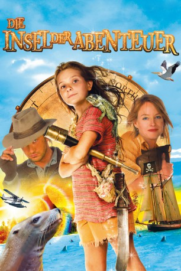
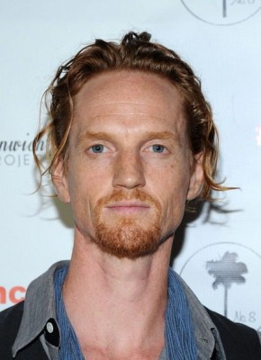
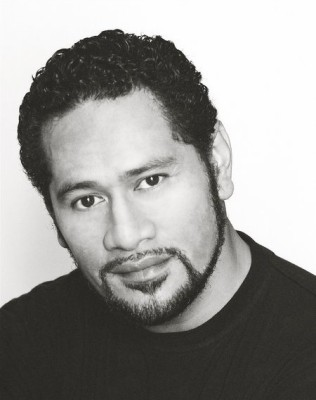

#7294 Die Insel der Abenteuer
Alternativ: Nim's Island
 
 IMDB-Wertung: 6.0 / 10
IMDB-Wertung: 6.0 / 10  Metascore: 0
Metascore: 0 
Die kleine Nim, die gemeinsam mit ihrem Vater Jack - einem Wissenschaftler - auf einer weit abgelegenen Insel lebt, ist plötzlich auf sich allein gestellt, als Jack mit seinem Boot in einen Sturm gerät und hilflos auf dem offenen Meer festsitzt. Es kommt aber noch dicker: Ein Kreuzfahrtschiff voller Touristen, die Nim dank ihrer blühenden Fantasie als Piraten identifiziert, legt am Strand an. Per Internet kontaktiert Nim ihren großen Helden, den draufgängerischen Abenteurer Alex Rover, dessen Geschichten sie regelmäßig verschlingt. Was sie nicht weiß, ist, dass hinter Alex in Wahrheit keineswegs der „Indiana Jones“-Cowboy aus ihren geliebten Abenteuerromanen steckt, sondern die schüchterne, überaus spleenige Bestseller-Autorin Alexandra Rover, die aufgrund ihrer zahlreichen Phobien seit mehreren Wochen ihr Haus nicht mehr verlassen hat.
Jahr: 2008
Dauer: 96 Minuten
FSK: 6
Land: USA Studio: Fox-WaldenTonspuren: DTS - ,
Untertitel: Deutsch,
Auflösung: 1080p (1920x800) Größe: 6850 MB
Genre: Komödie, Abenteuer, Fantasy, Familie
Regisseur: Jennifer Flackett, Mark Levin
Drehbuch: Joseph Kwong
Soundtrack:
Darsteller:
 Abigail Breslin als Nim Rusoe
Abigail Breslin als Nim Rusoe Jodie Foster als Alexandra Rover
Jodie Foster als Alexandra Rover Gerard Butler als Jack Rusoe / Alex Rover
Gerard Butler als Jack Rusoe / Alex Rover- Mark Brady als Purser
- Anthony Simcoe als First Mate
-  Christopher James Baker als Ensign
- Peter Callan als Edmund's Father
- Rhonda Doyle als Shirley - Edmund's mother
 Bryan Probets als Australian Tourist #1
Bryan Probets als Australian Tourist #1-  Jay Laga'aia als Helicopter Pilot
- John Walton als Evil Captor
- Jon-Claire Lee als Business Passenger
- Shannon van der Drift als Nim's Mother
- Dennis Kreusler als Buccaneer Pirate Chef , uncredited
- Alphonso McAuley als Russell , uncredited
 Anthony Phelan als Long John Silver , uncredited
Anthony Phelan als Long John Silver , uncredited- Renae Smith Trevino als Tourist , uncredited
- Michael Carman als Captain
- Maddison Joyce als Edmund
- Russell Butler als Old Fisherman
- Colin Gibson als Cruise Director
- Andrew Nason als Australian Tourist #2
- Dorothy Thorsen als Blue-Haired Woman
- Penny Everingham als Older Woman Tourist
- Tony Bellette als Older Man Tourist
- Jeff Dornan als Taxi Driver
- Marea Lambert Barker als Flight Attendant
- Nami Itonaga als Airport Gate Attendant
- Stephen Daddow als Rarotongan Taxi Driver
- Craig Marriott als Pharmacy Delivery Guy
- Matthew Little als TSA Guard #1
- Cheryl Craig als TSA Guard #2
- Tania Pari als Street Vendor
- Phoenix Leong als Goat Boy
- Ashley London als Buffy Colt
- Zack Kibria als Dock Worker , uncredited
- Josh Richart als Cruise Visitor , uncredited
Datei: X:\2-Dilogie(G-M)\Insel der Abenteuer\Insel der Abenteuer, Die (2008, FSK6, 1920x800).mkv seit 15.10.2017
Festplatte: HD Collection-2(A-Z)-3(A-M)
 Alle Filme aus Gruppe '2-Dilogie(G-M)\Insel der Abenteuer'
Alle Filme aus Gruppe '2-Dilogie(G-M)\Insel der Abenteuer'